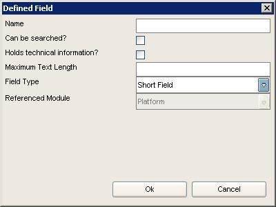

Creating a new module
In the main screen of Data Crow you'll find a menu called "modules". This menu contains wizards to customize, create and relate modules.
In this chapter we will dive into the creation of you very own module.
Starting the wizard
Start the wizard by selecting "Create Module Wizard" from the modules menu.
Selecting a module type
There are 3 types of modules to choose from; property module, media module and "other" module.
Property Modules
A property is a very simple module. It has 2 important predefined fields; "name" and "icon" and cannot be extended with any other field.
The property module is used by other modules to create property items such as genres, categories, storage media, etc. More on this when
you start to define fields for your module.
Media Modules
This module type is very common within Data Crow. Software, Audio CDs and Movies are examples of media modules. This module type has a set
of predefined fields common for all media modules: title, description, year, location, rating and the default "user" fields.
Other Modules
If any of the above doesn't suite you, go for this module type. This module type has no predefined fields (apart from the ID field which is
required for all modules) making this the perfect candidate to create a module from scratch.
Filling the basic information
In this step you will name the module and its item(s), select the icons and enter a description. The name of the module and the object names
cannot be changed aftwerwards so pick these carefully (the name is used to create certain files and tables). The icons can be changed by
doing a single left mouse click on the specific icon. The large icon will be used in module bar (left hand side of the screen) the small version
is use throughout the whole application.
You can also indicate if items belonging to the module can be lend to other persons (not available for property modules). Enabling this will
activate the loan functionality. You can change this information at a later stage.
Defining fields
An important part of defining a module is defining the fields belonging to it. In the screen you see two tables, one with the predifined fields
(from the selected module type) and one with the newly defined fields. The predefined fields cannot be changed or removed. You can however
create new fields or remove them.
Creating a field
To create a new field press the "add field" button. The following dialog will open:

Name
The name of the field as displayed on screen.
Can be searched?
Indicates if users can search / filter on this field.
Holds technical information?
Does this field hold technical information. If so the field will be shown in the technical informal tab of the item form.
Maximum field length
The maximum input length for this field (in characters).
Field type
The field type. There is a wide range of field types available and most of them speak for themselves. However the single reference and
multiple reference field need some more explanation. When you select either of these field types you will notice the reference module
list becoming active. With these field types you can create a reference to another module. If you select a single reference field
Data Crow will create a list of items from the selected module (such as is the case with categories for software). Only one
of these items can be selected. If you select a multiple reference field the field can hold more then one property items
(such as with the genres for audio cds). A field with an item select dialog is created.
Another note on reference fields. When you make a reference to a property module the items of this module can be managed from the "tools" menu.
A reference to any other type of module will make of the referenced module a sub-module of the current module. Such is the case for example with actors for the movie module. The
actor module is referenced by the movie module, making the actor module a sub-module of the movie module. The sub-module is displayed in the
module bar when you select the referencing module.
Reference Module
Used for reference fields only. See above for further explanation.
Altering a field
Existing fields cannot be altered.
Removing a field
Select the appriopriate field and press the "Remove Field" button.
Finishing the Wizard
After all information has been supplied press the "finish" button or the "finish & new" button. The "finish" button finishes the module creation process. Data Crow needs to restart before you can use the new module. The "finish & new" button finishes the module creation process and restarts the wizard (which can be useful when you want to create more then one module).